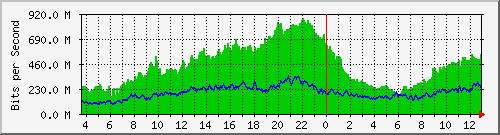

Traffic Analysis for Gi1/0/3 -- spider.sky
| System: | spider.sky in stoyka |
| Maintainer: | falcon@skyinet.org |
| Description: | GigabitEthernet1/0/3 link2border |
| ifType: | ethernetCsmacd (6) |
| ifName: | Gi1/0/3 |
| Max Speed: | 1000.0 Mbits/s |
| Ip: | No Ip (No DNS name) |
The statistics were last updated Thursday, 26 October 2017 at 12:55,
at which time 'spider.sky' had been up for 8 days, 10:32:41.
`Daily' Graph (5 Minute Average)

|
Max |
Average |
Current |
| In |
881.4 Mb/s (88.1%) |
449.2 Mb/s (44.9%) |
551.4 Mb/s (55.1%) |
| Out |
344.7 Mb/s (34.5%) |
193.1 Mb/s (19.3%) |
228.7 Mb/s (22.9%) |
`Weekly' Graph (30 Minute Average)
|
Max |
Average |
Current |
| In |
848.9 Mb/s (84.9%) |
477.1 Mb/s (47.7%) |
516.9 Mb/s (51.7%) |
| Out |
395.3 Mb/s (39.5%) |
223.6 Mb/s (22.4%) |
252.1 Mb/s (25.2%) |
`Monthly' Graph (2 Hour Average)
|
Max |
Average |
Current |
| In |
952.1 Mb/s (95.2%) |
457.1 Mb/s (45.7%) |
432.7 Mb/s (43.3%) |
| Out |
444.1 Mb/s (44.4%) |
234.2 Mb/s (23.4%) |
205.6 Mb/s (20.6%) |
`Yearly' Graph (1 Day Average)
|
Max |
Average |
Current |
| In |
522.3 Mb/s (52.2%) |
414.9 Mb/s (41.5%) |
490.8 Mb/s (49.1%) |
| Out |
327.9 Mb/s (32.8%) |
211.7 Mb/s (21.2%) |
196.7 Mb/s (19.7%) |
| GREEN ### |
Incoming Traffic in Bits per Second |
| BLUE ### |
Outgoing Traffic in Bits per Second |